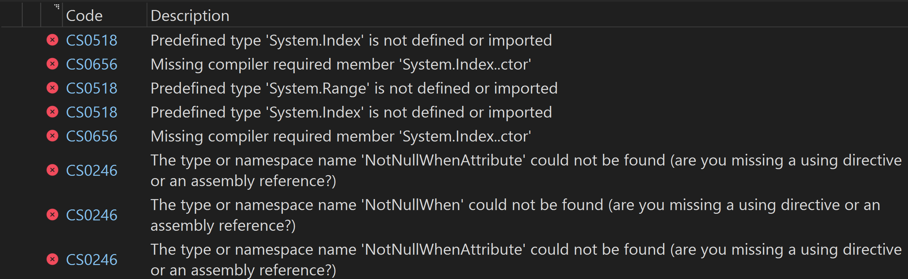

Targeting .NET Standard for a class library means that the library will be compatible with applications designed for past versions of .NET. E.g., an application targeting .NET Framework 4.8 or .NET Core 2.1 will be able to load a class library targeting .NET Standard 2.0 because it can only rely on the same API surface that the application does.
There are a few reasons developers need to work in .NET Standard. A popular one is writing Roslyn analyzers, another is writing PowerShell modules (Cmdlets) in C#. .NET Standard is a formal specification of .NET APIs available across multiple .NET implementations. It's like a definition of a slice of APIs that are implemented across .NET versions. Designing for a slice of APIs allows you to design and deploy class libraries that will work across .NET implementations. The latest version of .NET Standard (2.1) was released in September 2020.
Paradoxically, .NET languages depend on base-class libraries for aspects of their implementation. For example, the C# language feature foreach depends on the types IEnumerable, IEnumerable<T>, IEnumerator, and IEnumerator<T>. Specifications like .NET Standard enable C# language features across .NET implementations by including those dependent types in their specification. But languages evolve and improve over time, as do base class libraries.
Since .NET Standard was last updated in 2020, some new language features that depend on new types in the base class library have been introduced. Some of these new language features aren't necessarily supported in .NET Standard, even though you can use the latest compiler version when building .NET Standard class libraries. For example, Ranges and Indices are a feature added to C# 8.0, released in September 2019. Ranges and Indices depend upon the Range and Index types. But to write a PowerShell library that supports Windows PowerShell and PowerShell 7, you have to target .NET Standard 2.0, whose API surface was specified around August 2017--roughly two years before Range and Index existed. This means Ranges and Indices aren't supported out of the box in C# code targeting .NET Standard 2.0. var lastWord = words[^1] or var firstFourWords = words[0..3] will cause errors (Predefined type 'System.Index' is not defined or imported, and Predefined type 'System.Range' is not defined or imported, respectively).
Fortunately, the compiler is flexible about where those predefined types are defined. Someone can't simply create a .NET Standard 2.0 library with Range and Index as public types, because they will clash with modern versions of .NET (e.g., in an XUnit test project). But the .NET Standard 2.0 library can create internal versions of those classes that the compiler is happy to resolve to. But having everyone who authors a .NET Standard 2.0 library write their own Range and Index classes (as well as any other class that modern C# syntax requires, like CallerArgumentExpressionAttribute, DoesNotReturnAttribute, etc.) is problematic, to say the least.
Content-only NuGet Packages
.NET and NuGet packages support content- or source-only packages. Source-only packages are NuGet packages that, instead of packaging binaries like DLLs, package source code. Source-only packages don't add any assembly dependencies that require deployment.
That's where Pri.ProductivityExtensions.Source comes in. Pri.ProductivityExtensions.Source is a source-only NuGet package that includes the source code for various types created after .NET Standard 2.x to support C# language features (and some helper extensions like ArgumentException.ThrowIfNull that depend on those features) that aren't available in .NET Standard.
"Pri.ProductivityExtensions.Source" is also the ID of the package and can be found on NuGet.org here. It can be added to a project via the .NET API: dotnet add package Pri.ProductivityExtensions.Source, or via Package Manager Console: Install-Package Pri.ProductivityExtensions.Source. It is open source, and the source code is available on GitHub. For an example using Pri.ProductivityExtensions.Source see Pri.Essentials.DotnetPsCmds. And if you install DotnetPsCmds, you can install Pri.ProductivityExtensions.Source in PowerShell: Add-DotnetPackages Pri.ProductivityExtensions.Source.
When you reference Pri.ProductivityExtensions.Source, it causes the content (source code) to be considered part of the target project. The source code remains in the .nuget cache and is not copied alongside the rest of your source code so no new source code needs to be committed to revision control.
The types included in Pri.ProductivityExtensions.Source are internal, so they won't clash if Pri.ProductivityExtensions.Source is referenced in a project targeting a modern .NET implementation. Although I don't recommend using Pri.ProductivityExtensions.Source in a .NET Standard class library that is targeting a modern .NET implementation because it will resolve to Pri.ProductivityExtensions.Source instead of the .NET implementation's.
If you've created a .NET Standard library and have wanted to use the latest version of the compiler but start receiving compiler errors like The type or namespace name 'CallerArgumentExpressionAttribute' does not exist in the namespace 'System.Runtime.CompilerServices' (are you missing an assembly reference?) or the other aforementioned errors, fear not, you simply need to reference Pri.ProductivityExtensions.Source!
Pri.ProductivityExtensions.Source enables the following modern C# compiler features:
Additionally, Pri.ProductivityExtensions.Source includes the following helper methods that otherwise depend on newer language-dependent types:
ArgumentException.ThrowIfNullOrWhiteSpace(string?, string?)🔗ArgumentNullException.ThrowIfNull(object?, string?)🔗
Understanding C# Timeline Since Last .NET Standard
The last version of .NET Standard (2.1) was released in 2020. Since 2020, C# versions 10, 11, 12, 13, and 14 have been released. A lot has changed across 5 versions of C#, including the use of numerous APIs to enable various features. There isn't a complete list of base-class APIs that the C# compiler depends on.
comments powered by DisqusIf you find this useful
I'm a freelance software architect. If you find this post useful and think I can provide value to your team, please reach out to see how I can help. See About for information about the services I provide.